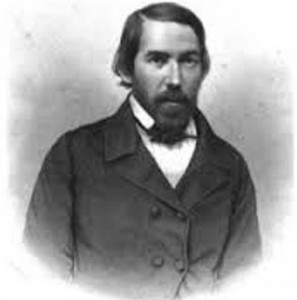

Auteur: Madeleine Sautie.
Y a-t-il beaucoup de cubains qui ne dit rien ces versets? Peu seront qui ne peuvent pas identifier son auteur?
Mia Tortola! Sans être dam, / Fait mon lit et mis à ma table, / Pour un baiser de temps en temps, / Pourquoi vous êtes allé? ¿Qué fuga es esa, / Cimarronzuela de rojos pies?// ¿Ver hojas verdes solo te incita? / ¿El fresco arroyo tu pico invita? / ¿Te llama el aire que susurró? / ¡Ay de mi tórtola, mi tortolita,/ Que al monte ha ido y allí? quedó! (La fuga de la tórtola).
En effet, no puedo atestiguar cada una de las respuestas de los lectores, pero estoy segura de que no serían pocos los que, de no ser por el título delator, dirían sin desempolvar demasiado el pensamiento que se trata de José Jacinto Milanés, el gran poeta romántico que vio nacer la ciudad de Matanzas hace ya 200 années.
Muchas particularidades marcan la vida tormentosa de este bardo y dramaturgo nuestro nacido un 16 Août de 1814, y fallecido en tristísimas circunstancias en 1863. Se trata de un creador que con una existencia de 49 años —de ella una buena parte azotada por la locura— dejó en las páginas de la literatura cubana una huella inmarcesible al erigirse como una de las más encumbradas voces del primer romanticismo en la Isla.
De estos méritos dan fe una poética que recoge fundamentalmente temas eróticos y de la naturaleza, amoldados en versos pletóricos de melancolía, cubanía y cotidianidad ?—entre las más notables composiciones, Su alma, El beso, La madrugada y La fuga…—, junto a varias piezas dramáticas como El conde Alarcos, que fue desde su estreno en 1838, en el Teatro principal de La Habana, todo un acontecimiento, no solo por los aplausos que provocó sino también por la repercusión que tuvo el éxito en la metrópoli madrileña.
José Jacinto, el primogénito de los 14 hijos de una familia humilde encabezada por Don Alonso Milanés y Doña Rita Fuentes, nació con el don de la poesía y la sabiduría. Cuentan que siendo niño se bebió con sumo placer el Tesoro del teatro español, de Manuel José Quintana, un libro obsequiado por su padre, y que en la escuela de Ambrosio José González aprendió latín con su profesor Francisco Guerra Betancourt, a quien suplió en la docencia en varias ocasiones. El dominio perfecto del italiano y del francés que le permitió traducir a escritores de esas lenguas se lo debió el joven a su empeño autodidacta por superar su cultura.
Su hermosa caligrafía motivó que lo aceptaran, siendo muy jovencito, en el escritorio de una ferretería habanera. Sin embargo no fue en la capital sino en su ciudad natal, a la que regresaría posteriormente, donde conoció al ilustre escritor Domingo del Monte, con quien entablara hasta sus últimos días una entrañable amistad.
Con Del Monte volvería a frecuentar años después La Habana, invitado por el renombrado intelectual para pasar temporadas en su casa en varias oportunidades. La biblioteca del hogar habanero y las populares tertulias de quien ha sido considerado el primer crítico profesional de la Isla, fueron para José Jacinto coyunturales luces que enriquecieron su saber clásico y moderno y dieron rienda suelta a su creatividad. Así incrementa su producción literaria que ocurre fundamentalmente entre 1836 et 1843.
Para Del Monte, uno de los primeros en reconocer la talla literaria de José María Heredia, resultaba curioso que el poeta matancero no imitara al Cantor del Niágara —lo que era muy común en los escritores noveles de entonces— y que componiendo con visible autenticidad se entregara a sus textos románticos, taciturnos y tiernos. Sus obras, más que las de sus contemporáneos, calaron en el alma popular, por tratar en ellas enseñanzas ejemplarizantes y criticar las injusticias sociales.
Fue la puesta escénica de El Conde…, primera obra moderna cubana, y el más impactante acontecimiento teatral de la primera mitad de nuestro siglo XIX, que tuvo lugar en el Teatro Principal habanero —y a cuya representación no asistió Milanés nunca— el causante de la primera de sus crisis nerviosas.
Amores contrariados desencadenarían en el vate una angustia agitada que terminaría por trastornar su cabeza. La ruptura del compromiso con su novia y el advenimiento de un amor imposible por su prima Isabel a quien amaba desde niño lo sumirían en un mutismo que en vano trataron de remediar amigos y familiares. Con la esperanza de calmar su espíritu y salvar su razón su hermano Francisco lo acompañó a Estados Unidos y Europa, sin conseguir en este empeño una visible mejoría.
Tantos esfuerzos por sanarlo le arrancaron al cantor matancero algunas rimas, pero no sería más el poeta de siempre. Poco a poco se fue apagando en un silencio permanente que desencadenó en declarada demencia. No faltaron a su lado ni los amigos queridos ni los cuidados de la familia, pero no pudieron rescatarlo de las tinieblas a donde fue a parar su pensamiento.
Su vida se fugó una tarde de noviembre de 1863, en aquella ciudad donde tantas veces contempló meditabundo el río. Su poema De codos en el puente nos deja para siempre su estampa en ademán inquisitivo y amoroso con Matanzas, la tierra que lo vio partir tras 20 años de mudez, y que jamás olvida el triste pesar que significó el misterioso adiós de su poeta, el que murió sin juicio y nació pobre, en aquella calle que hoy lleva su nombre.
La fuga de la tórtola
Mia Tortola! Sans être dam,
Fait mon lit et mis à ma table,
Pour un baiser de temps en temps,
Pourquoi vous êtes allé? ¿Qué fuga es ésa,
Cimarronzuela de rojos pies?¿Ver hojas verdes sólo te incita?
¿El fresco arroyo tu pico invita?
¿Te llama el aire que susurró?
¡Ay de mi tórtola, mi tortolita,
Que al monte ha ido y allá quedó!Oye mi ruego, que el miedo exhala.
¿De qué te sirve batir el ala,
Si te amenazan con muerte igual
La astuta liga, la ardiente bala,
Y el cauto jubo del manigual?Pero ¡ay! tu fuga ya me acredita
Que ansías ser libre, pasión bendita
Que aunque la lloro la apruebo yo
¡Ay de mi tórtola, mi tortolita,
Que al monte ha ido y allá quedó!Si ya no vuelves, ¿a quién confío
Mi amor oculto, mi desvarío,
Mis ilusiones que vierten miel,
Cuando me quede mirando al río,
Y a la alta luna que brilla en él?Inconsolable, triste y marchita,
Me iré muriendo, pues en mi cuita
Mi confidenta me abandonó.
¡Ay de mi tórtola, mi tortolita
Que al monte ha ido y allá quedó!
Coudes sur le pont
San Juan murmurante, que corres ligero
llevando tus ondas en grato vaivén,
tus ondas de plata que bate y sacude
moviendo sus remos con gran rapidez,
(monstruoso cetáceo que nada a flor de agua)
la lancha atestada de pipas de miel:
San Juan, ¡cuántas veces parado en tu puente
al rayo de luna que empieza a nacer,
y al soplo amoroso de brisas fugaces
frescura he pedido, que halague mi sien!Entonces un aura, la más apacible
que en ondas marinas se sabe mecer,
que empapa sus alas en ámbar suave,
y a aquel que la implora lo besa fiel,
haciendo en las olas que mansas voltean,
un pliegue de espuma, deshecho después,
llegaba a mis voces, cercábame en torno,
bañando mi frente de calma y placer:
y yo silencioso y a par sonriendo,
a Dios daba gracias del hálito aquel,
del beso del aura que casi es tan dulce
como es el de amores que da una mujer.Mas siempre que pongo, San Juan murmurante,
el codo en el puente, la mano en la sien,
y siempre que miro los rayos de luna
que van con tus ondas jugando tal vez,
cavilo qué fuiste, cavilo lo que eres:
y allá en las edades que están por nacer,
medito si acaso serás este río
que surca la industria con tanto batel,
o acaso un arroyo sin nombre, sin linfa,
que al pie de un peñasco, sin ser menester,
estéril filtrando, te juzgue el que pase
vil hijo de un monte sin nombre también.
Que al paso que llevan los varios sucesos
que nunca atrás vuelven el rápido pie,
no extrañan los ojos ver llanos mañana
los cerros cargados de quintas ayer.
Asáltame a veces algún pensamiento
que el seno me oprime, y el débil poder
del ánimo triste, ni basta a templarle,
ni estorba tampoco que hiera cruel.-
Amante ardoroso del arte divino
que esparce los rayos del claro saber,
sectario constante de todas ideas
que al lento progreso le suelten el pie,
desnudo de fuerza, privado de apoyo,
engasto en la rima, que sabe correr,
los gritos, los ecos de hermosa cultura
que atajen los males y tiendan al bien.Mas ¡ay! ¡manso río! que van mis canciones
como esas tus ondas, que en dulce lamer
las unas tras otras tus márgenes corren,
y allá en la bahía se pierden después.
Y no me conceden los mudos destinos
la gloria profunda y el hondo placer
de verte ¡oh Matanzas! ciudad adorada
que en dobles corrientes el rostro te ves,
colmada de fuerzas, colmada de industria,
feliz acogiendo, sin agrio desdén,
las artes hermosas, que vagas mendigan,
y al vicio dedican su triste niñez.Avec tout ce que, yo espero (porque es la esperanza
la amiga que el vate no puede perder)
que vean mis ojos un alba siquiera,
si un sol de cultura mis ojos no ven.
Si no, ¿de qué sirven, San Juan apacible,
tus aguas que brillan en manso correr,
tus botes pintados de rojo y de negro
que atracan airosos a tanto almacén,
y el canto compuesto de duros sonidos
de esclavos lancheros que bogan en pie,
y alzando y bajando las palas enormes
dividen y azotan tus ondas de muere.El beso
De noche en fresco jardín
sentado estaba a par de ella.
Yo joven: joven y bella
mi serafín.Hablábamos del negror
del cielo augusto y sin brillo,
del regalado airecillo,
y del amor.Hablábamos del lugar
en que primero nos vimos;
y sin querer nos pusimos
a suspirar.A suspirar y a sentir
gozo en volver a juntarnos:
a suspirar y a mirarnos,
y a sonreir.Porque amor casto entre dos
es colmo de las venturas,
y unirse dos almas puras
es ver a Dios.Una mano la pedí,
porque en sus lánguidos ojos
y en medio a sus labios rojos
brillaba el sí.Ella, al oírme, tembló,
y en mí largo tiempo fijo
su dulce mirar, me dijo
tímida: pas.Pero era un no cuyo son
pone el corazón risueño:
un no celeste, halagüeño,
sin negación…Por eso yo la cogí
la mano, y con loco exceso
a imprimir sobre ella un beso
me resolví.Beso que en mi alma crié
en sueños de gloria y calma,
y que por joya del alma
siempre guardé.Puro como el arrebol
que orna una tarde de mayo,
y ardiente como es el rayo
del mismo sol.Pero al besarla sentí
mi labio sin movimiento,
porque un negro pensamiento
me asaltó allí.¿Quién sabe si el vivo ardor
de mi boca osada, ansiosa,
no iba a secar ya la rosa
de su pudor?¿Quién sabe si tras mi fiel
beso, otro labio vendría
que ambicioso borraría
las huellas de él?¿Quién sabe si iba el desliz
de mi labio torpe, insano,
a volver su mano, mano
de meretriz?Mano asquerosa, infernal,
para el alma del poeta:
que sufre el beso y aprieta
el vil metal.Así pensé… y fuime en paz,
dejándola intacta y pura;
y lágrima de dulzura
bañó mi faz.